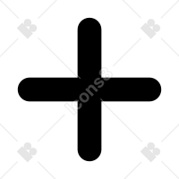

<div class="centered-content">
    <div class="task-manager-container">
        <div class="sidebar has-background-white">
            <h1 class="title has-text-primary">
                Lists
            </h1>
            <div class="list-menu">
            <a href="" class="list-menu-item" *ngFor="let list of lists" [routerLink]="['/lists',list._id]" routerLinkActive="is-active">
                <p>{{list.title}}</p>
            </a>
        </div>
            <button class="button is-primary has-text-white" routerLink="/new-list">+New Item</button>
        </div>
        <div class="tasks-list-container has-background-light">
            <div *ngIf="tasks">
                <!-- <div class="top-bar"> -->
            <h1 class="title has-text-primary">
                Tasks
            </h1>
            <div class="task" *ngFor="let task of tasks">
                <p [ngStyle]="{color: task.completed? 'green':'red'}" (click)="onTaskClick(task)">{{task.title}}</p>
            <button (click)="deleteTask(task)">
                
            </button></div>
            <!-- <div class="dropdown is-hoverable is-right">
                <div class="drop-down-trigger">
                    <button class="button" aria-haspopup="true" aria-controls="dropdown-menu4">
                        <span class="icon is-small">
                            <i class="fas fa-cog" aria-hidden="true"></i>
                        </span>
                    </button>
                </div>
                <div class="dropdown-menu" id="dropdown-menu4" role="menu">
                    <div class="dropdown-content">
                        <a [routerLink]="['/edit-list', selectedListId]" class="dropdown-item">
                            Edit
                        </a>
                        <a (click)="onDeleteListClick()" class=""></a>
                    </div> 
                </div>    
            </div> -->
            <!-- <div class="task" *ngFor="let task of tasks" (click)="onTaskClick(task)">
                <p>{{task.title}}</p>
            </div> -->
            <button class="circle-add-button button is-primary" routerLink="./new-task">
                
            </button>
            </div>
        </div>
    </div>
</div>